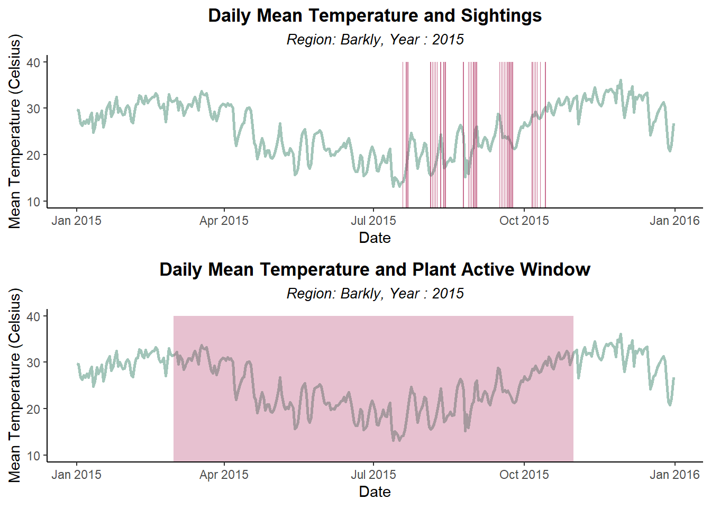
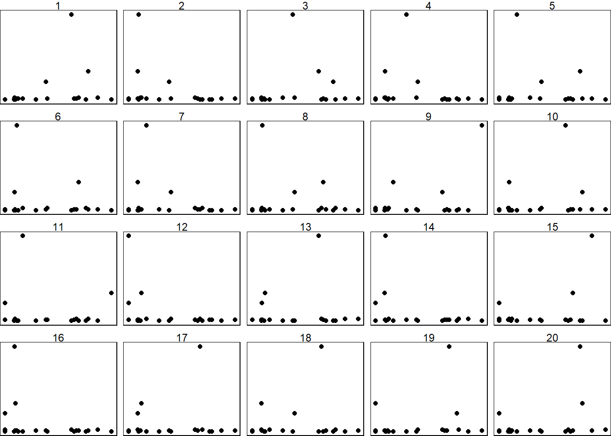

| Variable | Description |
|---|---|
| decimalLatitude | Latitude value of sighting in decimal format. |
| decimalLongitude | Longitude value of sighting in decimal format. |
| eventDate | Recorded sighting date and time in the format YYYY-MM-DD, hh:mm:ss. In some cases, no time was recorded, and therefore, it is left as 00:00:00. |
| scientificName | The scientific name of the observed species. |
| taxonConceptID | The taxonomy website ID: Ptilotus calostachyus. |
| recordID | The record ID of each observation. |
| dataResourceName | The data resource associated with the observation: List of 23 partners. |
| occurrenceStatus | The occurrence status: Present. |
| eventRemarks | Any additional remarks or comments related to the observation. |
| eventTime | Time of the event recorded in the format hh:mm:ss, including the time zone difference. |
| eventID | The event ID of each obsercation. |
| samplingEffort | A description of the effort or area that was surveyed or sampled to locate the species. |
| samplingProtocol | The protocol that was used to sample the species. |
| basisOfRecord | Indicates how the record was made: Human observation. |
| cl959 | Denotes the local government area where the observation was made. |
Weeping Mulla Mulla: Ptilotus Calostachyus
Introduction
The Ptilotus calostachyus F.Muell, which is also known as the Weeping Mulla Mulla, is an endemic plant that is commonly found in the Western Australia territory (Florabase n. d.). This species thrives in arid region, particular in sandy habitats with red and stony plains (Florabase n. d.). Being a perennial plant, it can live up to more than two years with the seasonal pattern of being dormant in the winter and sprouting again in springtime (Florabase n. d.). Moreover, Weeping Mulla Mulla displays erect or spreading, herb or shrub characteristics, meaning that it can be found as a tall plant and/or covering an area, as well as with/without a woody body. They can grow from 0.2 to 2 meters tall with pink-white flowers, blooming from March to October. Despite the widespread of its coverage, there are little to none organized sighting campaign of the Weeping Mulla Mulla due to the outback nature of its habitat and lesser popularity as compared to other iconic Australia ecotourism species.
Five expectations when exploring the Weeping Mulla Mulla sightings:
We expect most of the sightings to occur between March to October.
We expect most of the sighting location to be in the Western Australia territory.
We expect the sightings to be consistent numbers of sightings with an increasing trend as sighting/reporting/monitoring methods become better. However, this anticipation will exclude years during the COVID-19 pandemic. Since the data relies on human observation, there may be fewer sightings due to a lack of reporting.
We expect the sightings to be clustered in areas with a water source as the plant prefers harsh, dry, and hot sandy habitats.
We expect the sightings records to increase after rainfall events, as plants typically begin to bloom after wet season, which is around June - August for Perth.
This report aims to provide a comprehensive analysis of the Weeping Mulla Mulla, utilising primary data sources from the ALA Atlas of Living Australia and the Global Historical Climatology Network (GHCN) database.
Throughout this exploration of expectations, numerous intriguing observations were uncovered that were not initially anticipated. Notably, the employment of spData and leaflet effectively visualised these findings and allows for interactivity.
It is important to note several limitations that have affected the final analysis. Firstly, there is a scarcity of observations, primarily because this plant is not commonly sought after or reported by individuals. Secondly, the absence of weather recordings in remote areas may lead to gaps in the dataset.

Data description
Occurences data
Below is the code to download the raw data directly from ALA Atlas of Living Australia.
The basis of record was filtered to HUMAN_OBSERVATION only. The intention of this analysis is to focus solely on sightings of the species in the wild, and differentiate between specimens that are preserved, collected samples, or in controlled environments such as museums.
We have also checked the BASIS_OF_RECORD_INVALID to determine the reliability of each observation, in which all the TRUE results were removed in the process of sub-setting HUMAN_OBSERVATION entry in the basisOfRecord.
The other options, such as LIVING SPECIMEN, could imply captivity or control, PRESERVED SPECIMEN typically refers to non-living specimens, and OCCURRENCE was too general to confirm its wild state.
The data obtained from the Atlas of Living Australia website combines information from multiple sources and includes various variables such as location, date, time, scientific names, resource names, species status, and more. The raw data set contains 359 observations and 15 variables.
For the analysis, the data is filtered to primarily focus on utilising the location and event time data. This is because the other variables do not contribute significantly to meaningful insights. However, a comprehensive dictionary of all the variables is provided below:
Weather data
The distribution of the Weeping Mulla Mulla commonly spans the local government areas (LGAs) of Ashburton, Broome, Derby-West Kimberley, East Pilbara, Halls Creek, Karratha, Laverton, Meekatharra, Ngaanyatjarraku, Port Hedland, Upper Gascoyne, and Wyndham-East Kimberley, as per findings from (Florabase).
Since weather is an important factor in the occurrences of species, the Global Historical Climatology Network (GHCN) database contains weather station data that are useful for analysing trends in weather patterns and precipitation. Obtaining the data via the rnoaa package for Australia was completed using the code below:
aus_stations <- ghcnd_stations() |>
filter(str_starts(id, "ASN")) |>
filter(last_year >= 2020) |>
mutate(wmo_id = as.numeric(wmo_id),
name = str_to_lower(name)) |>
select(-state, -gsn_flag) |>
filter(element %in% c("PRCP", "TMAX", "TMIN")) |>
nest(element: last_year) |>
rowwise() |>
filter(nrow(data) == 3) |>
select(-data) | Variables | Description |
|---|---|
| id | An identifier associated with a specific station. |
| latitude | The latitude (in decimal degrees) of the station’s location. |
| longitude | The longitude (in decimal degrees) of the station’s location. |
| elevation | The elevation (in meters) of the station’s location. |
| name | The name or description of the station. |
| wmo_id | The World Meteorological Organization (WMO) identifier associated with the station. |
Obtaining weather data for Tennant Creek
The code for obtaining precipitation, maximum temperature, and minimum temperature data for Tennant Creek is provided below by filtering using the station ID ASN00015135:
tennant_creek_airport <- aus_stations |>
filter(id == "ASN00015135") |>
rowwise() |>
mutate(ts = list(meteo_pull_monitors(
monitors = id, var = c("PRCP", "TMAX", "TMIN"),
date_min = "2004-01-01",
date_max = "2023-09-13") |>
select(-id))) |>
rename(lat = latitude, long = longitude, elev = elevation) |>
select(id, long, lat, elev, name, wmo_id, ts) %>%
unnest(ts) |>
mutate(tmax = tmax/10, tmin = tmin/ 10)| Variables | Description |
|---|---|
| id | An identifier associated with a specific location or station. |
| long | The longitude (in decimal degrees) of the location. |
| lat | The latitude (in decimal degrees) of the location. |
| elev | The elevation (in meters) of the location. |
| name | The name or description of the location or station. |
| wmo_id | The World Meteorological Organization (WMO) identifier associated with the location. |
| date | The date of the recorded weather data. |
| prcp | Precipitation amount. |
| tmax | Maximum temperature. |
| tmin | Minimum temperature. |
Tourism Data
We are going to extend our focus beyond the mere observation of this wild flower by looking into the tourism activities within its habitat. Leveraging data sourced from Tourism Research Australia (TRA), our objective is to discern whether the tourist activities have played a role in the number of Weeping Mulla Mulla sightings. In doing so, there are some steps that have to be done to combine the occurence information and the tourism activities.
As we have been given the tourism dataset, below is the code and the table containing all variables in this data:
load("data/tourism.rda")| Variables | Description |
|---|---|
| Quarter | The Year and Quarter when the trips happened |
| Region | The Region where the people going to. Region is equivalent to Statistical Area 2. |
| Purpose | The reason of the trips (Business, Holiday, Other). |
| Trips | Number of people doing the trip. |
Initial data analysis
Occurences Data
Data cleaning
For Occurence Data, only location and event time variables significantly contribute to the analysis. Methods for selecting and renaming variables, extracting time variables from the date, and removing unnecessary strings and missing values were applied before saving a clean version for further analysis. The code for data cleaning can be referred to below:
weeping_mulla_mulla <- storage %>%
select(decimalLongitude, decimalLatitude, eventDate, cl959) %>%
rename(longitude = decimalLongitude,
latitude = decimalLatitude,
lga = cl959) %>%
mutate(
eventDate = as.Date(eventDate),
Year = lubridate::year(eventDate),
Month = lubridate::month(eventDate),
monthName = lubridate::month(eventDate, label = TRUE, abbr = TRUE),
Day = lubridate::day(eventDate),
lga = str_remove(lga, "\\(.*")
) %>%
filter(!is.na(eventDate)) %>%
filter(!is.na(longitude))
save(weeping_mulla_mulla, file = ("data/weeping_mulla_mulla.rda"))Checking data quality (Weeping Mulla Mulla)
We will be using visdat library to check for data type errors

Discussion
In Figure 1, the result of visdat does not signify any anomalies that needed to be addressed before proceeding with further analysis.

Discussion
In Figure 2, vis_guess shows that the longitude and latitude columns both have a record with potentially integer coordinates entry. While this is a sign of rounding given that the coordinates span from a length of values with 5 decimal places precision, we believe this value does not need any alterations as sighting coordinates span across a very wide geographical area, making rounding to the nearest whole number (1.0 degree is 111 kilometers) insignificant in our spatial analysis.
Weather Data
From the initial weather data that we extracted using rnoaa package, We obtained data for all weather stations across Australia. This is too broad for our analysis, also the sightings of Weeping Mulla Mulla are not even recorded in all parts of Australia. Therefore, some data transformation are needed. We will filter out the location where Weeping Mulla Mulla are recorded to make the analysis more precise.
When filtering the weather stations to be within the vicinity of Weeping Mulla Mulla, it becomes evident that the Weeping Mulla Mulla is found in the vicinity of 42 weather stations.

The triangles on the map represent the locations of 42 weather stations. The purple points, with varying alpha and size settings, help to identify the areas with the highest occurrence rates. Notably, the red triangle represents the Tennant Creek Airport weather station, which records the majority of observations. Given this focus, the analysis can be narrowed down by filtering the weather station data specifically for Tennant Creek.
For another view of these findings, the same map was recreated using leaflet:
Transforming Weather Station Data
The code below will add some new variables to the data that will be utilised in the analysis in later part. The new variables was created to extract Year, Quarter, and Month from the date of weather report, also we added a new variable to get the daily average temperature.
tca <- tennant_creek_airport %>%
mutate(Year = lubridate::year(date),
Quarter = lubridate::quarter(date),
Month = lubridate::month(date),
avg_tmp = (tmax + tmin) / 2)
tca_cb <- as_cubble(as_tibble(tca),
key = id,
index = date,
coords = c(long, lat))Tennant Creek in Barkly Region
The weeping_mulla_mulla dataset has included local government information. Given that Tennant Creek is situated in the local government area of Barkly, the final step involves integrating the species data set with temperature data from weather stations and highlighting those observations belonging to the Barkly region.
A new column named sighting is created. This column serves the crucial purpose of indicating whether a sighting occurred on a particular day or not and whether temperature data is available. Consequently, as all the observations within the Barkly region have corresponding temperature data, a comprehensive dataset can be generated that encompasses both observational data and daily weather information. Dates with records in this region would be given 1 while others would be 0.
temperature <- tennant_creek_airport %>%
left_join(weeping_mulla_mulla, by = c("date" = "eventDate")) %>%
mutate(sighting = ifelse(lga == "Barkly ", 1, 0)) %>%
mutate(sighting = ifelse(is.na(sighting), 0, sighting)) %>%
select(-11:-17)
save(temperature, file = ("data/temperature.rda"))Checking data quality (Temperature)
Similarly to Occurence Data, we will be using visdat library to check for data type errors

From the Figure 3, we can see that there are some NAs in prcp, tmax, and tmin columns. These empty data observations will then be removed accordingly.

Figure 4 shows that both tmax and tmin consists of both integers and double, which is reasonable as there might be some dates where the temperature is rounded up to the whole numbers. Moreover, this is rounding up is neglectable to us since we are not interested in such precision in temperature measurements. Some NAs were carried over fromt the previous vis_dat() results, which will be removed as they lack the necessary data from further analysis.
modified_temperature <-
temperature %>%
na.omit()
save(modified_temperature, file = ("data/temperature.rda"))The modified temperature data has been updated.
Tourism Data
As we will analyse the correlation between Tourism and Occurence (sightings), it will be best to join these two datasets. By joining these two datasets, we will be able to perform temporal and spatial analysis. Temporal and spatial analysis will be helpful to perform since it will reveal seasonal variation, long-term trends, short-term fluctuations, identifying hotspots, and causality.
Join the Tourism Data with Occurences Data
To join these two datasets, we are planning to use the spatial and temporal data that is contained in each dataset as the join condition. We are going to start the preparation for temporal variables before we move to spatial variables. Hence, in the next section the order will be temporal then spatial.
Preparation for the Temporal Data
The temporal variables between Occurences and Tourism data are represented by eventDate and Quarter variables, respectively. As both of these variables are in different format, we are going to transform one of them to enable the join process later. In this case, we are going to break down the eventDate variable into year & quarter format.
weeping_mulla_mulla <- weeping_mulla_mulla %>%
mutate(Quarter = paste("Q", lubridate::quarter(eventDate), sep = ""),
Year_Quarter = tsibble::yearquarter(eventDate)) Preparation for the Spatial Data
As we know, the spatial variables between Tourism and Occurences data are presented by Region and longitude & latitude, respectively. It is not possible to just join the data based on the value of these variables, so some data transformations are needed. Looking at the extraction code (given) for Tourism data and researching TRA’s website here, we have got the idea that Region variable is the area level of the Statistical Area 2 (SA2). The SA2 is part of the main structure of the Australian Statistical Geography Standard (ASGS) Edition 3, meaning we can use its shapefile and extract the geometry of every region in Australia (which contain longitude & latitude values). We will match the geometry in the SA2 data with longitude & latitude in the Occurences dataset to get the SA2 region name of each sighting. The code below will provide the step-by-step of the extraction process.
# Converting Occurences data to a sf object
wmm_sf <- weeping_mulla_mulla %>%
st_as_sf(coords = c("longitude", "latitude"),
crs = st_crs("WGS84"))
# Joining
## some points are out of the polygon, lets filter out so we get only points in the polygon
wmm_region <-
st_join(AU_region, wmm_sf, left = TRUE) %>% # spatial join to get intersection of points and poly
filter(!is.na(region), # get only the points (sightings) that fall in the polygon (tourism region)
!is.na(eventDate)) # filter out the NA values that represents mismatch geometry with Occurences dataJoin Temporal and Spatial Data
Now, our Occurence data has matching region name with the region in the Tourism data, we also have transformed the format for temporal variables. Finally, We can start joining the temporal and spatial variables between these two datasets.
# Finalising joined occurences & tourism weeping mulla mulla data
wmm_tourism <- wmm_region %>%
left_join(tourism, by = c("region" = "Region", "Year_Quarter" = "Quarter")) %>%
filter(!is.na(Purpose), #removing unmatch quarter
!Purpose == "Total") %>% #removing summarised number
select(!c(4, 7:9)) %>%
group_by_all() %>%
summarise(sightings_tot = n())
# Dropping `geometry` for non-spatial related analysis
wmm_tourism_dg <- wmm_tourism %>%
st_drop_geometry() Exploratory data analysis
The Analysis of Our Expectations
In this section, we are going to analyse the data based on the expectations that we have set earlier in the report. We will answer those expectations through visual representation in order to help faster the process of understanding. Each of the analysis will be completed with discussion points that extracted from our analysis.
Spatial expectation
To evaluate the spatial distribution of the species, a method involving the use of a map to pinpoint locations was employed. This was achieved by utilising the spData package in conjunction with its world data.

The initial expectation was that the majority of sightings would be concentrated in Western Australia (Figure 5).
The map displaying the sightings below validates the initial hypothesis. However, it also reveals a significant number of sightings in the Northern Territory.
Most of the sightings are clustered in the northern regions of Western Australia, aligning with expectations. Notably, there are no sightings in the southern areas of Western Australia, including the city of Perth.
Temporal expectation
To assess the temporal occurrences of the species, the same method of using a map to pinpoint locations was employed. However, an additional step was introduced, involving the segmentation of the data by month to distribute the results throughout the year.
The initial expectation was that the Weeping Mulla Mulla would exhibit a higher frequency of observations from March to October (“Active” months).
The map (Figure 6) displaying the sightings by month validates this initial hypothesis, as there are fewer data points on the map in January and February, as well as in November and December.
Interestingly, a new insight emerges when the data is segmented by month. The previous map showed the regions where observations were most frequent, namely Western Australia and the Northern Territory. Now, when the data is subset by month, it becomes apparent that these two regions remain the primary clusters.

To test the validity of our visual inference, we decided to employ nullabor null plots. Our hypotheses are as follows:
- \(H_0:\) There is no difference in the distribution of geographical points between the “Active” months and the “Others” months.
- \(H_1:\) There is a difference in the distribution of geographical points between the “Active” months and the “Others” months.

We have given the null plots (Figure 7) to around 14 friends and only one of them picked the true plot at 16. This equates to the p-values below:
pvisual(1,14,20) x simulated binom
[1,] 1 0.4619 0.512325x simulated shows 0.4612 and binom shows 0.512325 - both are above the threshold 0.05, which means that we fail to reject the null hypothesis in favor of the alternative hypothesis. Consequently, we are 95% confident that the selection of the true plot is by chance and there is no association between the combinations of longitude and latitude for different Month periods (“Active” and “Others”). This means that the Weeping Mulla Mulla can still be found outside of their active months without being in specific area.
Trend expectation
Since the data relies on human observation, it was anticipated that there might have been fewer sightings due to a lack of reporting.
By employing a simple method of plotting the number of observations against the years using a histogram (Figure 8), it can be seen that there was no indication of reduced observations during the COVID-19 years from 2000 to 2021. In fact, 2021 recorded the second-highest number of observations for the species.
Nevertheless, an interesting new observation stands out - a significant spike in sightings occurred in 2015. This spike was the highest, surpassing even the sightings in 2021, with 108 observations compared to 34, which is more than three times as many.
Currently, there are no findings that can explain this phenomenon. Given that the years after 2015 usually saw much higher reported sightings as compared to the previous, we hypothesize that this effect is due to the proliferation of internet-of-things, allowing sightings to be reported with greater ease and more reliable reporting platforms/databanks.
Seasonality expectation
To test whether our expectation that the Weeping Mulla Mulla becomes more active after rainfall seasons is accurate, we decided to plot the occurrences by month. While there are some indications from the previous Temporal expectation section, where June to August plots show considerably more observation points, we would like create a bar plot for a better visualization inference.
Interestingly, we observe decreased sightings during June and July while August has the highest sighting occurrences (Figure 9). March marks the start of the blooming cycle with April and May being the autumn season in Western Australia (Tourism Australia n. d.), which has occasional showers. This explains the large rise in sightings for these months. However, the main raining events (June to August) saw significantly lower occurrences - we believe this is due to thunderstorms and flooding, preventing casual observers to stumble upon these plants. Only August has high sighting occurrences, as the end of winter has milder downpours.
Habitat expectation
Given that the Weeping Mulla Mulla prefers stony and sandy environments, we expect the plants to be sighted near areas with freshwater such as river banks. Moreover, observations by travelers might be more likely to be located near and/or on the way to a water source. To test our this expectation, we deploy a leaflet map, which displays geographical features such as subsurface water, creeks, lakes, and rivers.
The map is seen in the Figure 10, but due to the zoom level, we could not see the water body features of the map; Therefore, we decided to investigate a cluster of sightings near Ali Curung.
Based on the map above (Figure 11), we can see that the main cluster of Weeping Mulla Mulla does not live near a water source, which is different from what we expected. This suggests that the plant is dependent on rain, meaning that high precipitation periods might lead to higher sightings. It is also interesting to see that these sightings were near the National 87 road, implying that these reports were made by passersby.
The Weather Analysis
This section will cover the correlation between weather environment to the sightings of Weeping Mulla Mulla. We are going to analyse if there is any actual relationship between these two variables. We aim to spot the behaviour of Weeping Mulla Mulla towards environment condition. Let’s find out!
Precipitation and sighting annually
The additional data from the tenant creek airport weather station allows us to investigate the relation between precipitation and sighting directly, resulting in the graph below which visualizes annual average rainfall and annual sightings.

From the Figure 12, we can see there are multiple gaps in the sighting of the Weeping Mulla Mulla from 2004 to 2023. This inconsistency can be explained by the lack of popularity of our plant species. As addressed above in the Trend expectation section, 2015 saw an abnormally high sighting count, despite a normal annual average precipitation figure for that year, especially when there were no sighting records in 2013-2014. We can hypothesize a delayed effect of plant sightings where years with decreasing rainfall will be accompanied by sightings when the annual average precipitation begins to trend upward. For instance, 2006 - 2007 saw a decreasing trend in rainfall without any plant sightings; However, 2008 saw new reported sightings, as well as the start of increasing precipitation trend from 2008 to 2011. Another example is when the downward trend from 2011 to 2013 saw dwindling sightings with increasing rainfall but from 2015 onwards, sightings were much higher and there were fewer gaps in annual sightings. Perhaps this is due to preference for dry weather of the plants; therefore, decreasing precips allow the Weeping Mulla Mulla to thrive better in constrast to being overwatered in wetter years.
Temperature and sightings
Since the rainfall data did not signify any concrete answers, we decided to also investigate the daily average temperature and whether that date has a reported sighting. This is to determine at what average temperature that sighting is likely to be made.

Discussion
Figure 13 depicts that, even when the data ranges from 2004 to 2023, there are very little reported sightings of the Weeping Mulla Mulla in Barkly. Nonetheless, we can observe that most of the years have very similar seasonality trend for average temperatures; thus, we decided to investigate 2015 as it has the most reported sightings.

Discussion
By narrowing it down to 2015, we recognize that most of the sightings happened in the later half of the year, specifically when the weather begins to get warmer but not during the warmest days (Figure 14). While most of the observations were reported within the “Active” months of the flower, it is interesting to see that March to early July saw no reported sightings. We believe that lack of observations is caused by lack of human observers rather than the plant’s blooming characteristics since we have explored this habit earlier in the Temporal expectation section. Additionally, it is intriguing to observe that the active months of the plant coincide with the transition from colder to warmer weather in the lower figure. We also consider the possibility that the mentality effect of “the weather is getting warmer” enables a greater inclination in people for outdoor ventures - increasing the sighting frequency of the plant.
Tourism Analysis
In this section, we aim to correlate the number of sightings of Weeping Mulla Mulla with the number of tourists in the area of the sightings. Is the number of sightings influenced by nearby tourism activities? Does the increasing number of visit resulted in increasing number of Weeping Mulla Mulla sightings? Let’s explore the data that we have to understand that.
By continuing our earlier observations, we will now focus on the area with the most recorded sightings, which, as mentioned in the previous section, is close to the Tennant Creek Airport weather station. By utilizing data from Australian Bureau of Statistics of SA2, we identified that Tennant Creek Airport is located in the region of Barkly, Northern Territory.
Therefore, our subsequent analysis will concentrate solely on the Barkly region.
Trend of Tourist Over Time
Before we dive deep into the correlation analysis of occurrences and tourism, we would like to explore the tourism data. It is important to profile this data first, as most of the time they provide a deeper understanding and can sharpen our analysis later. The chart below illustrates the trend of tourism in Barkly Region.
Discussion
The plot (Figure 15) shows the total number of tourist trips over time, grouped by year and quarter. As can be seen, the trend fluctuates significantly from year to year. Notably, Quarter 3 of 2003 saw the Barkly region record its peak number of visits, while in contrast, Quarter 1 of 2022 and Quarter of 2018 have no visitor at all. This broad trend doesn’t provide enough granularity, making it challenging to identify any seasonality that might yield insightful information. Hence, we will delve deeper into this temporal analysis in order to get full understanding on tourism pattern of Barkly region.
Temporal Trends by Quarter
Let’s explore the data further by looking at the trend on quarterly basis. By considering quarter spectrum, here we will ignore the year component, we will combine each quarter from all year into one. Through this approach, we are hoping to reveal any pattern arises from the similarity of time.
The location of Barkly Region that is in the middle of the desert may also have a contribution to the number of tourism. Our intuition define a desert area will be very hot during summer, which make it a less suitable place to visit. It will be more suitable in the other season, hence probably one of the factor behind why it is a popular place to visit in Q3 (according to figure (Figure 15)). In the graph below, we will try to prove our intuiton by utilising the weather station data that has temperature data.
Discussion
Some interesting insights that are shown in the plot above:
The left graph in (Figure 16) shows the number of tourism for each quarter, it’s evident that Q3 attracts the most tourists, with over 450,000 people visiting Barkly, followed by Q2 with more than 250(’000) people, Q4 with just below 250(’000) people, and last, Q1 with just above than 100(’000) people.
The right graph in (Figure 16) depicts the average temperature trends around Barkly region for each quarter. As can be seen that Q1 and Q4 temperature share a pretty similar range of temperature with around 30 Celsius degree, while Q2 and Q3 hover around a cooler 20 Celsius degree. This is align with the seasonal condition in Australia, where Q1 is the period of summer to fall (higher temperature), Q2 is fall to winter (lower temperature), Q3 is winter to spring (lower temperature), and Q4 is spring to summer (higher temperature).
Based on above observations, it appears our initial assumption was accurate. Given the desert landscape of Barkly, it’s plausible that the milder temperatures in Q3 make it a more attractive time for tourists. In contrast, Q1 experienced the lowest number of tourism which potentially caused by higher temperature to the area.
Temporal Trends by Quarter for Different Purposes
Now we are going to look at how the tourism activities varies across multiple categories, including holidays, business activities, leisurely visits, and other significant reasons. By looking at this spectrum, we will be able to gain valuable insights into what sort of activities that visiters intended to do in Barkly region, helping us to shape our understanding towards this analysis in general. The graph below will provide us with such information.
Discussion
According to the (Figure 17) above, it’s evident that all the graphs representing different trip purposes display a fluctuating trend, consistent with the (Figure 16). It seems like “Holiday” experienced the most fluctuation, with “Other” is the most steady. From the quantity perspective, “Holiday” come out on top as the main reason, followed by “Business”, “Visiting”, and “Other”. From this graph, we can conclude the Barkly is one of the popular destination when people decide where to spend their holiday to. We are interested to determine if Weeping Mulla Mulla eco-tourism is one of the a contributing factor to this trend.
In the next section, we will utilize all the information we gather around the tourism trend in Barkly region to compare it with Occurrences dataset. Our goal is to determine if there is any specific eco-tourism related to Weeping Mulla Mulla that may have contributed to the significant volume over the number of tourism into Barkly region.
Weeping Mulla Mulla Eco-Tourism
In this part, we will shift our focus into finding the correlation between the sightings of Weeping Mulla Mulla with the number of tourism of Barkly region. We aim to see if the increasing number of tourist visit will also be followed by increasing number of Weeping Mulla Mulla sighting. We will expose any hinder pattern that could not be spotted just by looking at the data separately. Let’s unveil it!
Ecotourist interest in Weeping Mulla Mulla
Before we employ data analysis to reveal any insights regarding this topic, we perform a thorough research on the Weeping Mulla Mulla eco-tourism. Unfortunately, after spending hours looking, there is no single information leading us to any news/articles/announcements related to it, not even local government website. There is no single advertisement by tour & travel organisation that specifically offer an eco-tourism to Barkly region for Weeping Mulla Mulla. As such, our analysis will be based on the data we have on hand, aiming to discern any significant patterns.
We now move on into the data analysis part. Firstly, we narrow down the necessary data related to eco-tourism interest of Weeping Mulla Mulla by filtering out Trips with “Holiday” purpose only. We assume that people who has spotted and reported the occurrences are on their vacation, hence the selection of variable Purpose plays a role here.
Discussion
Through a visual representation of number of tourist to number of sightings from the (Figure 18), we can clearly see there is no correlation between them. The increasing number of visitor to Barkly is not followed by the increasing number of Weeping Mulla Mulla sightings. For instance, Quarter 3 of 2015, which recorded the top number of sightings, isn’t even within the top five quarters for tourist visits. In contrast, Quarter 3 of 2019, which had the highest number of tourist visits, recorded only two sightings. This indicates that Weeping Mulla Mulla observation potentially is not one of the deciding factor people go to Barkly.
Visual Inference of Tourism & Sightings
In supporting our discussion, we made a visual inference and asked some of our friends if they can distinguish the null plot that produced by permutating the variable.

\(H_0:\): There is no relationship between number of tourist visiting a certain region to the number of sightings of Weeping Mulla Mulla in that same region.
\(H_1:\): There is strong relationship between number of tourist visiting a certain region to the number of sightings of Weeping Mulla Mulla in that same region.
The result for p-value
x = 1 people
n = 10 people
p-value computation
nullabor::pvisual(1,10,20) x simulated binom
[1,] 1 0.3707 0.4012631From the computation, x simulated shows 0.3707 and binom shows 0.4012631, meaning the p-value of correlation plot is 0.401 or 40.1%. Since it is more than 0.05 or 5% (significance level), then we will accept H0. This mean there is weak linear relationship between number of tourism and number of sightings. The majority of the participants in the survey expressed that identifying the most distinct plot from the selection is quite challenging due to the similarity in patterns among all of them.
Spatial Analysis of Tourism and Occurences
Our current data doesn’t provide enough support to solidify the connection between Weeping Mulla Mulla and tourism number, and it remains inconclusive whether the influx of visitors to Barkly was partially driven by the prominence of the Weeping Mulla Mulla. A more detailed perspective can be gained by examining the subsequent map, which will place Weeping Mulla Mulla’s sightings with the number of trips to multiple regions.
Discussion
Building on our prior discussion, the map in (Figure 19) offers an insightful visualisation of the relationship between Weeping Mulla Mulla occurrences and tourism numbers. A bit different approach to previous analysis, in here, we are including all regions that recording occurrence numbers. We did this because we want to see if the data tells opposite fact when we consider other regions. By utilising spatial analysis, it will provide holistic view and expedite the understanding process. On the map visual itself, the left side is a map of all regions where sightings are recorded, while on the right side is just Barkly region only (our primary region).
The map illustrates a prominent presence of Weeping Mulla Mulla in the North-central areas of Western Australia and parts of the Northern Territory. Notably, the regions with more number of tourist are presented with lighter color, and the darker color represent fewer number of tourist. As can be seen, the regions with higher number of tourism are not the regions where the most sightings recorded. The number could just be contributed from other essential factors, such as popular attractions, infrastructural development, or easier accessibility. So, this spatial analysis supports our previous analysis which could not see any correlation between these two events. Ultimately, this also align with our research about Weeping Mulla Mulla eco-tourism which gave us no information.
Summary
Our analysis of the Weeping Mulla Mulla has confirmed or debunked several key expectations:
Spatial Distribution: The species’ sightings are concentrated in the north of Western Australia and in the Northern Territory, forming the two primary clusters of observations.
Temporal Patterns: The majority of Weeping Mulla Mulla sightings occur between March and October, in line with its thriving period during these months.
Trend Confirmation: We have observed a consistent number of sightings with an increasing trend, attributed to enhanced sighting, reporting, and monitoring methods, particularly evident since 2015. Remarkably, there was no decline in observations even during the COVID lockdown period.
Habitat Preferences: Initial expectations were that sightings would cluster around areas with a water source, given the plant’s preference for harsh, dry, and hot sandy habitats. However, our analysis reveals a surprising finding. The primary cluster of sightings does not necessarily align with water sources, indicating the plant’s reliance on rain for survival. Additionally, sightings are frequently reported near roads, suggesting observations by passersby.
Rainfall Influence: Considering that the Weeping Mulla Mulla typically blooms after the wet season, which occurs approximately between June and August, we conducted an in-depth analysis of rainfall and precipitation. Intriguingly, while there were more sightings in March and April during the blooming cycle and occasional showers, there was a decrease in sightings during thunderstorms and flooding in June and July. The highest number of sightings was recorded in August, likely attributed to milder downpours. This observation aligns with the inherent nature of the Weeping Mulla Mulla as a desert plant that thrives without relying heavily on water.
Tourism Peak Seasons: Examining the Barkly region’s tourism patterns in detail, particularly in the area surrounding Tennant Creek Airport, reveals that visitors vary over time. Quarter 3 of 2003 has a noteworthy high, whereas some quarters—like Q1 2022—recorded zero tourists. Additional information gleaned from the quarterly analysis suggests possible seasonal trends. Considering Barkly’s desert terrain and the temperature data from nearby weather stations, it seems that Q3’s cooler temperatures provide a more enticing window of time for visitors. In addition, our research indicates that the Barkly region is a popular destination for vacationers.
Eco-tourism Insights: Examining the potential association between sightings of Weeping Mulla Mulla and eco-tourism, the study is unable to find proof of a direct connection. According to the data research, even areas where there are a lot of tourist visit did not resulted in higher number of sightings. An in-depth geographical examination, comparing the number of Weeping Mulla Mulla sightings with the number of tourists in various locations, validates this finding. It suggests that factors other than Weeping Mulla Mulla sightings might affect visitor patterns.
In conclusion, the findings in this report affirm that the Weeping Mulla Mulla is an exceptionally unique and endemic plant, exclusively located in the northern regions of Australia. Tourists seeking to experience the harsh desert climate can observe it at its peak during the months of March to October. This desert plant thrives with minimal water requirements for survival. In addition, while the Barkly region attracts tourists for various reasons, the presence of the Weeping Mulla Mulla doesn’t significantly influence tourist numbers. Despite its uniqueness, the eco-tourism potential of this plant remains relatively unexplored.
References
Websites
- iNaturalist. Ptilotus calostachyus Image., Retrieved October 03, 2023, from https://www.inaturalist.org/taxa/869581-Ptilotus-calostachyus.
- Florabase, Ptilotus calostachyus F.Muell., Retrieved September 29, 2023, from https://florabase.dbca.wa.gov.au/browse/profile.php/2704
- The Atlas of Living Australia. Ptilotus calostachyus F.Muell. Retrieved September 27, 2023, from https://bie.ala.org.au/species/https://id.biodiversity.org.au/node/apni/2910906# overview
- Tourism NT. Annual Report 2015-16. Retrieved October 26, 2023, from https://parliament.nt.gov.au/__data/assets/pdf_file/0005/385952/185.-Annual-Report-2015-2016,-Tourism-NT.pdf
Packages
- cowplot: Wilke C (2020). cowplot: Streamlined Plot Theme and Plot Annotations for ‘ggplot2’. R package version 1.1.1, https://CRAN.R-project.org/package=cowplot.
- galah: Westgate M, Kellie D, Stevenson M, Newman P (2023). galah: Biodiversity Data from the Living Atlas Community. R package version 1.5.3, https://CRAN.R-project.org/package=galah.
- kableExtra: Zhu H (2021). kableExtra: Construct Complex Table with ‘kable’ and Pipe Syntax. R package version 1.3.4, https://CRAN.R-project.org/package=kableExtra.
- leaflet: Cheng J, Schloerke B, Karambelkar B, Xie Y (2023). leaflet: Create Interactive Web Maps with the JavaScript ‘Leaflet’ Library. R package version 2.2.0, https://CRAN.R-project.org/package=leaflet.
- nullabor: Buja, A., Cook, D., Hofmann, H., Lawrence, M., Lee, E.-K., Swayne, D. F, Wickham, H. (2009) Statistical Inference for Exploratory Data Analysis and Model Diagnostics Royal Society Philosophical Transactions A, 367(1906):4361-4383. URL http://rsta.royalsocietypublishing.org/content/367/1906/4361.article-info
- plotly: C. Sievert. Interactive Web-Based Data Visualization with R, plotly, and shiny. Chapman and Hall/CRC Florida, 2020.
- rnoaa: Chamberlain S, Hocking D (2023). rnoaa: ‘NOAA’ Weather Data from R. R package version 1.4.0, https://CRAN.R-project.org/package=rnoaa.
- spData: Bivand R, Nowosad J, Lovelace R (2023). spData: Datasets for Spatial Analysis. R
- tidyverse: Wickham H, Averick M, Bryan J, Chang W, McGowan LD, François R, Grolemund G, Hayes A, Henry L, Hester J, Kuhn M, Pedersen TL, Miller E, Bache SM, Müller K, Ooms J, Robinson D, Seidel DP, Spinu V, Takahashi K, Vaughan D, Wilke C, Woo K, Yutani H (2019). “Welcome to the tidyverse.” Journal of Open Source Software, 4(43), 1686. doi:10.21105/joss.01686 https://doi.org/10.21105/joss.01686.
- visdat: Tierney N (2017). “visdat: Visualising Whole Data Frames.” JOSS, 2(16), 355. doi:10.21105/joss.00355 https://doi.org/10.21105/joss.00355, http://dx.doi.org/10.21105/joss.00355.
- tsibble: Wang, E, D Cook, and RJ Hyndman (2020). A new tidy data structure to support exploration and modeling of temporal data, Journal of Computational and Graphical Statistics, 29:3, 466-478, doi:10.1080/10618600.2019.1695624.
- lubridate: Garrett Grolemund, Hadley Wickham (2011). Dates and Times Made Easy with lubridate. Journal of Statistical Software, 40(3), 1-25. URL https://www.jstatsoft.org/v40/i03/.
- sf: Pebesma, E., & Bivand, R. (2023). Spatial Data Science: With Applications in R. Chapman and Hall/CRC. https://doi.org/10.1201/9780429459016
- rmapshaper: Teucher A, Russell K (2023). rmapshaper: Client for ‘mapshaper’ for ‘Geospatial’ Operations. R package version 0.5.0, https://CRAN.R-project.org/package=rmapshaper.
- zoo: Zeileis A, Grothendieck G (2005). “zoo: S3 Infrastructure for Regular and Irregular Time Series.” Journal of Statistical Software, 14(6), 1-27. doi:10.18637/jss.v014.i06 https://doi.org/10.18637/jss.v014.i06.
- cubble: Zhang H, Cook D, Laa U, Langrené N, Menéndez P (2023). cubble: A Vector Spatio-Temporal Data Structure for Data Analysis. R package version 0.3.0, https://github.com/huizezhang-sherry/cubble.
- gridExtra: Auguie B (2017). gridExtra: Miscellaneous Functions for “Grid” Graphics. R package version 2.3, https://CRAN.R-project.org/package=gridExtra.
- DT: Xie Y, Cheng J, Tan X (2023). DT: A Wrapper of the JavaScript Library ‘DataTables’. R package version 0.28, https://CRAN.R-project.org/package=DT.